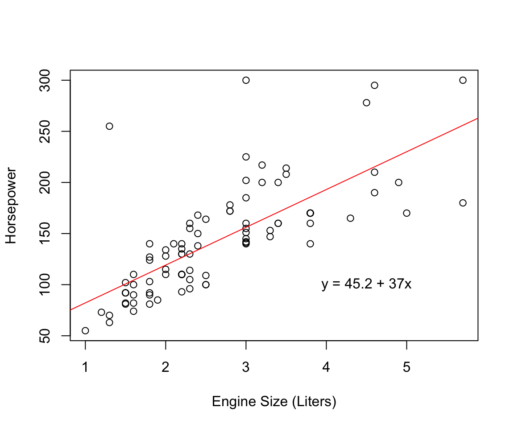
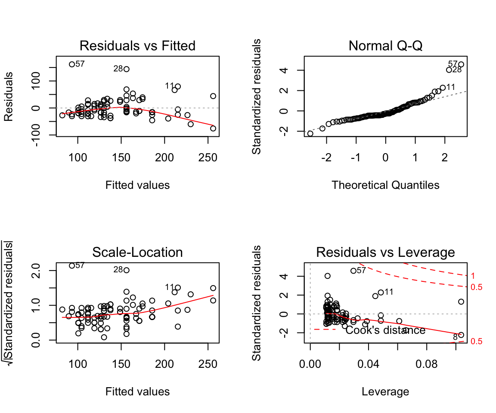

13 Linear Regression
In this activity, we explore the concepts of model development using regression. Here we show how to create a model, extract parameters from the model, and evaluate the appropriateness of the model.
13.1 The Data
For this exercise, we will play with some different data. In this case, we will use some data that is in the MASS package describing 1993 vehicles.
library(MASS)
names(Cars93)## [1] "Manufacturer" "Model" "Type"
## [4] "Min.Price" "Price" "Max.Price"
## [7] "MPG.city" "MPG.highway" "AirBags"
## [10] "DriveTrain" "Cylinders" "EngineSize"
## [13] "Horsepower" "RPM" "Rev.per.mile"
## [16] "Man.trans.avail" "Fuel.tank.capacity" "Passengers"
## [19] "Length" "Wheelbase" "Width"
## [22] "Turn.circle" "Rear.seat.room" "Luggage.room"
## [25] "Weight" "Origin" "Make"These data were taken from Car and Driver in 1993 and contain information on 93 different models that were produced that year. For our
13.2 Least Squares Linear Regression
If both your predictor and response data are numeric and you are attempting to create a mathematical representation of one variable in terms of the other, a regression approach is appropriate. The simplest model, containing one predictor and one response variable can be written as:
\[ y_{ij} = \beta_0 + \beta_1x_i + \epsilon_j \]
Where \(y_{ij}\) is the observed value, \(\beta_0\) is the intercept term (where the line crosses the y-axis), \(\beta_1\) is the slope coefficient on the \(x_1\) variable, and \(\epsilon_j\) is the error term–what is not explained by the model.
Least Squares Linear Regression is perhaps the most commonly used method to estimate a regression model and it is the one that is implemented in the functions below. To estimate the model, it follows the basic steps (illustrated in the figure below).
- The regression model will fit a line consisting of points we will call \(\hat{y}\).
- This line will go through the mean of both the x- and y- data points (\(\bar{x}\) and \(\bar{y}\) respectively).
- The slope of the line, anchored at \((\bar{x}, \bar{y})\), will be determined by finding a regression coefficient, \(\beta_1\), that minimizes the sum of the distances between each observed value and its corresponding fitted value (e.g., select a \(\beta_1\) that makes the smallest \(\sum (y_i - \hat{y}_i)^2\)).
- Estimate \(\beta_0\) the equation above using \(\beta_1\) while inserting \(\bar{y}\) and \(\bar{x}\) for the response and predictor variables.

Least squares regression fitting.
It is a rather simple approach and one that is expandable across a broad range of conditions. However, there are some assumptions that need to be met when using a least squares linear regression. These include:
- A linear relationship. The terms we used above are specifically linear (e.g., there are no higher order exponents on any of the values). If you suspect that there is a non-linear relationship between the variables, you can explore models that use modifications of the original data (e.g., \(\sqrt{y}\), \(x^3\), etc.).
- Normality of the data. As we saw earlier in the semester, we need to make certain assumptions about the underlying form of the data we are working with. In this case, we will be assuming that the data we are working with conform to normal expectations. You should test that a priori and we will see a bit later how it can be examined in the variation in the response not described by the model (e.g., the \(\epsilon\) in the equation above).
- Homoscedasticity. Scedasticity measures the variation in a variable throughout its range. It is important for us to look to make sure that the variation in our response variable is roughly uniform across its range (homoscedastic) as opposed to having a lot of variation on one end and little on the other (a condition of heteroscedasticity).
- No autocorrelation. For ecological data, this is an important component. If we are collecting data, the spatial proximity of where we collect the data should not contribute to similarity in the response variable.
- No colinearity among predictors. If you are fitting a model with more than one predictor variable, they should not be co-linear. What does this mean? It means that you should not use predictor variables that are highly correlated. How high? Well, one thought is that if \(1-R^2 < 0.2\) you may need to be concerned (where \(R^2\) is the fraction of the variation you can explain in one predictor by another using a linear regression approximation).
13.3 Fitting a Linear Model
To fit a model in R, we use the function lm() (literally short of ‘linear model’) and specify the formula we are trying to fit. In the following example, we will be looking to see the extent to which we can predict horsepower as a function of engine size.
library(ggplot2)
p <- ggplot( Cars93, aes(x=EngineSize, y=Horsepower) ) + geom_point()
p + geom_text( aes(label=Make, y=Horsepower+10), data=Cars93[57,])Figure 13.1: Horsepower as a function of engine size (in Liters) for 93 different vehicles available in 1993. The Mazda RX-7 is labeled as it is a rotary engine, an entirely different kind of engine than the rest.
As such, we specify the formula
Horsepower ~ EngineSize
which means, literally, that Horsepower is a function of EngineSize.
fit <- lm( Horsepower ~ EngineSize, data=Cars93)
fit##
## Call:
## lm(formula = Horsepower ~ EngineSize, data = Cars93)
##
## Coefficients:
## (Intercept) EngineSize
## 45.22 36.96The interesting terms here are the intercept (\(\beta_0\)) and the coefficient (the \(\beta_1\)) for the model fitting Horsepower to EngineSize.
As we saw previously in the case of a cor.test() examples, the thing that is returned from a lm() function call is a specific type of R object (it is really just a list),
class(fit)## [1] "lm"one with specific names and terms contained within it.
names(fit)## [1] "coefficients" "residuals" "effects" "rank"
## [5] "fitted.values" "assign" "qr" "df.residual"
## [9] "xlevels" "call" "terms" "model"As before, we can use this to make a plot of the model and the data.
plot( Horsepower ~ EngineSize, data=Cars93, xlab ="Engine Size (Liters)", ylab="Horsepower" )
abline(a=fit$coefficients[1], b=fit$coefficients[2], col="red")
b0 <- format( fit$coefficients[1], digits=3)
b1 <- format( fit$coefficients[2], digits=3)
msg <- paste( "y = ",b0, " + ", b1, "x", sep="")
text( 4.5,100, msg)
How does the model look? Do you think it is a good fit? Lets look at some output of the lm object.
summary(fit)##
## Call:
## lm(formula = Horsepower ~ EngineSize, data = Cars93)
##
## Residuals:
## Min 1Q Median 3Q Max
## -75.910 -19.664 -9.146 15.247 161.728
##
## Coefficients:
## Estimate Std. Error t value Pr(>|t|)
## (Intercept) 45.219 10.312 4.385 3.11e-05 ***
## EngineSize 36.963 3.605 10.253 < 2e-16 ***
## ---
## Signif. codes: 0 '***' 0.001 '**' 0.01 '*' 0.05 '.' 0.1 ' ' 1
##
## Residual standard error: 35.87 on 91 degrees of freedom
## Multiple R-squared: 0.536, Adjusted R-squared: 0.5309
## F-statistic: 105.1 on 1 and 91 DF, p-value: < 2.2e-16We see the terms, an estimate of their magnitude, and associated probability of keeping them in the model (assuming they are not zero). In the middle of the output, we see the R-squared values.
\[ R^2 = \frac{SS_{Model}}{SS_{Total}} \]
which tells us what fraction of the variation in the response variable is actually explained by the model. A higher value for \(R^2\) means that we are explaining more of the overall variation, whereas a smaller value means less of the variance is being explained. There is a caveat here, the magnitude of \(R^2\) will increase as we add more predictor variables. To get around this, we can look at an adjusted-\(R^2\), one that is corrected by the number of terms we have in the model. The formula for that is:
\[ R^2_{Adj} = R^2 - (1-R^2)\frac{p}{N-p-1} \]
where \(R^2\) is as above, \(p\) is the number of terms in the model, and \(N\) is the number of observations.
In the lower part of the output, we see the estimated \(F\) statistic, the degrees of freedom, and the associated P-Value. The \(F\) statistic is the test statistic for the model and is defined as the ratio of the variation explained by the model to that of the underlying data. The more variation explained, the larger the \(F\) statistic and the less likely that the model should be rejected.
For a look at the classic ANOVA table, we see the degrees of freedom, the Sums of Squares, the Mean Squares and the estimate \(F\) statistic.
anova(fit)## Analysis of Variance Table
##
## Response: Horsepower
## Df Sum Sq Mean Sq F value Pr(>F)
## EngineSize 1 135267 135267 105.12 < 2.2e-16 ***
## Residuals 91 117097 1287
## ---
## Signif. codes: 0 '***' 0.001 '**' 0.01 '*' 0.05 '.' 0.1 ' ' 1The degrees of freedom are assigned as follows:
- The total degrees of freedom is \(N-1\).
- You allocate a degree of freedom for each predictor variable.
- The residual degrees of freedom (e.g. that which we did not explain) is the the rest (e.g., \(N - p - 1\)).
The terms for the sums of squares come from the underlying data in the following way. The total sums of squared deviations are defined as:
\[ SS_{Total} = \sum_{i=1}^N (y_i - \bar{y})^2 \]
which are composed of the model sums of squares (the variation in the response explained by the model)
\[ SS_{Model} = \sum_{i=1}^N (\hat{y}_i - \bar{y})^2 \]
and the residual (sometimes called error) variation
\[ SS_{Residual} = \sum{i=1}^N (y - \hat{y}_i)^2 \]
These values denote the fit of the underlying model to the data, however, they are influenced by the number of samples that were collected. To estimate the mean deviation in the sums of squares, a set of parameters called the Mean Squares, you divide each of the sums of squares by its degrees of freedom.
\[\begin{align*} MS_{Model} &= \frac{SS_{Model}}{df_{Model}} \\ MS_{Residual} &= \frac{SS_{Residual}}{df_{Residual}} \\ MS_{Total} &= \frac{SS_{Total}}{df_{Total}} \end{align*}\]The \(MS_{Residual}\) term is our best estimator of the underlying variation in the model, whereas the \(MS_{Model}\) is the variation associated with fitting the model. The ratio of these two terms create the test statistic, \(F\).
\[ F = \frac{MS_{Model}}{MS_{Residual}} \]
This test-statistic, a ratio of variances, has a well known distribution IF the underlying data are normal. As this is well characterized, we can look up the probability of observing a value of this statistic as large or larger than that observed. To do this, we must know the degrees of freedom—more \(df\) means larger \(F\) and we need to take this into account.
The expected value of \(F\) at \(x\) is defined as:
\[ F_{x,df_1,df_2} = \frac{\sqrt{\frac{(df_1x)^{df_1}df_2^{df_2}}{(df_1x+df_2)^{df_1+df_2}}}}{x\mathbf{B}\left(\frac{df_1}{2},\frac{df2}{2}\right)} \]
where \(df_1\) and \(df_2\) are the model and error degrees of freedom and \(\mathbf{B}\) is the beta function.
So the model ‘looks’ like it is one that explains a lot of the variation, (\(R^2 =\) 0.5309), the amount of which appears to be of a magnitude that suggests the null hypothesis, \(H_O: \beta_1 = 0\) is not true (e.g., \(P < 2.2e-16\)). But is it a model that fits the assumptions and is well behaved? We can absolutely have significant models that whose underlying data are not consistent with the assumptions.
Fortunately, the lm() object has some built-in plotting options that help us to diagnose the appropriateness of the model.
If you type plot(fit) you will be led through a series of plots depicted in the next figure.
par(mfrow=c(2,2))
plot(fit, which=1)
plot(fit, which=2)
plot(fit, which=3)
plot(fit, which=5)
These depict the following items.
- Residuals vs. Fitted - This gives an indication of what is not explained by the model. Here if there are general trends (e.g., the residuals show systematic patterns of increase, decrease or non-linearity) these depict variance that is not explained by the underlying model.
- Residuals QQPlot - The variation that is not explained should also be normal, if it deviates from normality this suggests that the assumptions of the error terms may not be met in the underlying model.
- Scale-Location - A measure that removes any skew in the expected values.
- Leverage - A measure of the amount of differential influence that individual points may have in the estimation of the
You must always check these values for validity in the underlying model.
13.4 Multiple Regression
What if we have several potential predictor variables that we may want to put into a model? How can we determine which should be added to the model and which should not?
In this example, I’m going to take vehicle weight and see if it is predicted by
fit.1 <- lm( Weight ~ Length, data=Cars93)
fit.2 <- lm( Weight ~ Width, data=Cars93)
fit.3 <- lm( Weight ~ EngineSize, data=Cars93)
fit.4 <- lm( Weight ~ Fuel.tank.capacity, data=Cars93)
fit.5 <- lm( Weight ~ Length + Width, data=Cars93)
fit.6 <- lm( Weight ~ Width + Fuel.tank.capacity, data=Cars93)
fit.7 <- lm( Weight ~ Length + EngineSize, data=Cars93)
fit.8 <- lm( Weight ~ Length + Fuel.tank.capacity, data=Cars93)So how do we determine which of these model is better? Look at the output from each, which do you think?
One way we could evaluate them is to look at the a
R2 <- c( summary(fit.1)$r.squared,
summary(fit.2)$r.squared,
summary(fit.3)$r.squared,
summary(fit.4)$r.squared,
summary(fit.5)$r.squared,
summary(fit.6)$r.squared,
summary(fit.7)$r.squared,
summary(fit.8)$r.squared)
names(R2) <- paste("fit",1:8, sep=".")
R2## fit.1 fit.2 fit.3 fit.4 fit.5 fit.6 fit.7
## 0.6500782 0.7655560 0.7141523 0.7992683 0.7888728 0.8707672 0.7693030
## fit.8
## 0.8675266Another way to evaluate different models is through the use of a measure such as AIC (Akaike’s Information Criteria) or relatives. The notion of these parameters is that there needs to be a price paid for adding additional terms to a model. It is possible for one to add additional predictor variables and eventually inflate the observed \(R^2\) for the model. You can even add random variables and see the same thing, they will incrementally account for small amounts of variation in the response variable. AIC is defined as:
\[ AIC = 2k - 2\log(L) \]
where \(k\) is the number of terms in the model and \(L\) is an estimate of the log Likelihood estimator of the model.
aic.vals <- c( AIC(fit.1), AIC(fit.2),
AIC(fit.3), AIC(fit.4),
AIC(fit.5), AIC(fit.6),
AIC(fit.7), AIC(fit.8) )
names(aic.vals) <- names(R2)
aic.vals## fit.1 fit.2 fit.3 fit.4 fit.5 fit.6 fit.7 fit.8
## 1357.933 1320.687 1339.124 1306.249 1312.945 1267.296 1321.189 1269.600The better models are those with the smallest AIC values. They may be positive or negative but the smallest ones are considered to be models that are better fit. How much of a difference is considered smaller? Well, the general approach is to estimate \(\delta_{AIC}\) as the difference in magnitude of the alternative AIC values from the smallest one
dAIC <- (aic.vals - min( aic.vals ))
dAIC## fit.1 fit.2 fit.3 fit.4 fit.5 fit.6 fit.7
## 90.636733 53.390921 71.827437 38.952887 45.648586 0.000000 53.892522
## fit.8
## 2.303289General consensus is that \(\delta_{AIC}\) values that are between 0-2 are small enough that the models are indistinguishable—they should all be considered as equally informative. Values of \(\delta_{AIC}\) between 3-5 suggest that the models are pretty close and you may want to explore them further. Values greater than 5 suggest that those models are not as good as the one with the smallest AIC.
Here is a more readable output from these model tests.
Models <- as.character( c( formula(fit.1$terms),
formula(fit.2$terms),
formula(fit.3$terms),
formula(fit.4$terms),
formula(fit.5$terms),
formula(fit.6$terms),
formula(fit.7$terms),
formula(fit.8$terms)))
df <- data.frame( Model=names(dAIC),
Terms=Models,
R2=R2,
AIC=aic.vals,
Delta.AIC=dAIC)
knitr::kable(df, row.names = FALSE,digits = 3)| Model | Terms | R2 | AIC | Delta.AIC |
|---|---|---|---|---|
| fit.1 | Weight ~ Length | 0.650 | 1357.933 | 90.637 |
| fit.2 | Weight ~ Width | 0.766 | 1320.687 | 53.391 |
| fit.3 | Weight ~ EngineSize | 0.714 | 1339.124 | 71.827 |
| fit.4 | Weight ~ Fuel.tank.capacity | 0.799 | 1306.249 | 38.953 |
| fit.5 | Weight ~ Length + Width | 0.789 | 1312.945 | 45.649 |
| fit.6 | Weight ~ Width + Fuel.tank.capacity | 0.871 | 1267.296 | 0.000 |
| fit.7 | Weight ~ Length + EngineSize | 0.769 | 1321.189 | 53.893 |
| fit.8 | Weight ~ Length + Fuel.tank.capacity | 0.868 | 1269.600 | 2.303 |
It appears that both models fit.6 and fit.8, the two models with the size of the fuel tank, do a pretty reasonable job of describing the weight of the cars. Strictly speaking fit.6 is probably the most explanatory of the models with fit.8 being pretty close.